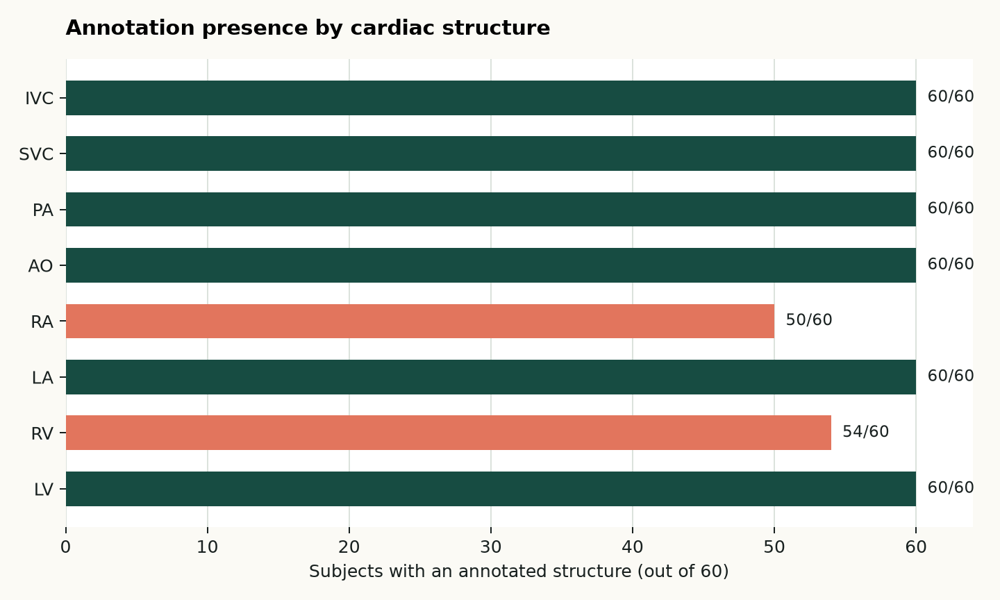
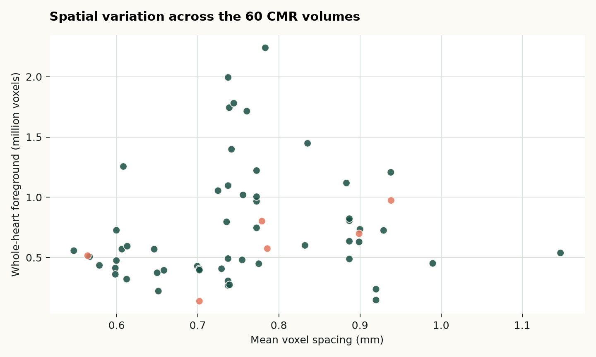
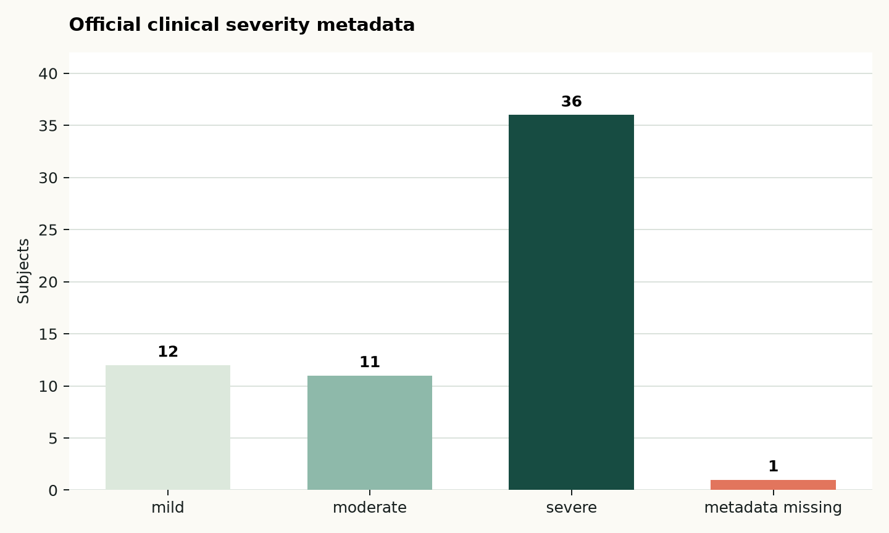

NIfTI (`.nii.gz`)
01 · 데이터셋 개요
무엇을 학습할 수 있는가
HVSMR-2.0은 선천성 심장질환(CHD) 환자의 3D cardiovascular MR(CMR) 60건과 수동 whole-heart segmentation을 제공하는 공개 데이터셋입니다. 4개 심장방과 4개 대혈관을 포함해, 단순한 정상/이상 분류보다 복잡한 해부학적 구조를 복원하고 정량화하는 연구에 적합합니다.
LV, RV, LA, RA, AO, PA, SVC, IVC
나이, severity, 진단·수술 정보, acquisition parameter
출처를 표기한 재사용 가능
02 · 다운로드부터 검증까지
재현 가능한 데이터 확보 과정
변형 선택
공식 `orig`, `cropped`, `cropped_norm` 중, 심장 crop·intensity normalization이 적용된 `cropped_norm`을 선택했습니다. 세 변형은 절대 섞지 않습니다.
공식 다운로드
Figshare article 25226363에서 ZIP과 clinical/technical CSV를 내려받았습니다. 원본 데이터는 Git에 저장하지 않습니다.
무결성 확인
공개된 MD5와 로컬 파일의 MD5를 대조했습니다.6027791717a1ecf51b03e0d84f1acee7
결과: 일치
압축 해제
60 subject의 image·segmentation·endpoint mask를 포함한 361개 파일을 추출했습니다.
감사·시각화
image/mask pairing, shape, spacing, intensity, label voxel count, metadata를 manifest로 저장하고 QC overlay를 만들었습니다.
다운로드 파일: `cropped_norm.zip` 1,214,309,305 bytes. 공식 checksum과 일치했습니다. 데이터셋의 원본·가공본은 저장소에서 제외하고, 코드와 문서만 version control 합니다.
03 · 전처리 설계
모델 입력을 바꾸기 전에, 데이터를 먼저 감사한다
`pat#_cropped_norm.nii.gz`
심장 주변으로 crop되고 intensity normalization된 3D CMR입니다.
`pat#_cropped_seg.nii.gz`
8개 구조의 whole-heart ground truth입니다. 값 0은 background입니다.
`pat#_cropped_seg_endpoints.nii.gz`
대혈관의 optional extent를 표시해 공정한 segmentation 비교를 돕습니다.
실행한 항목
- image, segmentation, endpoint mask의 subject별 pairing 검증
- 세 파일의 shape 동일성 검증
- voxel spacing·intensity percentile·foreground volume 추출
- 8개 구조별 voxel 수와 미지 라벨 검사
- clinical/technical metadata를 subject ID로 결합
- 최대 foreground axial slice 기준 QC overlay 3건 생성
재현 명령
.venv/bin/python src/preprocess_hvsmr.py
--data-dir datasets/raw/hvsmr-2.0/cropped_norm/extracted
--output-dir datasets/processed/hvsmr-2.0/cropped_norm
--clinical-csv …/hvsmr_clinical.csv
--technical-csv …/hvsmr_technical.csv전처리 코드 보기 ↗04 · 실제 분석 결과
60개 volume에서 확인한 데이터 특성
입력 shape과 spacing이 일정하지 않으므로, 학습 중 resampling/cropping은 명시적인 transform으로 고정하고 원본 NIfTI 자체는 변경하지 않는 것이 안전합니다.
05 · 라벨·해상도·임상 metadata
수치로 보는 데이터의 불균일성



06 · visual quality control
실제 NIfTI와 segmentation overlay
각 subject에서 segmentation foreground가 가장 큰 axial slice를 선택해 grayscale CMR 위에 label mask를 투명하게 덧씌웠습니다. 이는 정답의 임상적 타당성을 판정하는 도구가 아니라, file pairing·orientation·label loading을 빠르게 점검하는 QC입니다.
07 · 연구에 주는 의미
바로 학습에 들어가기 전 확인할 것
1. label-presence-aware evaluation
RV·RA가 없는 subject에서 해당 class의 Dice를 단순 평균하면 안 됩니다. 구조가 존재하는 case와 존재하지 않는 case를 분리해 보고합니다.
2. patient-level split
하나의 subject에서 나온 slice·patch가 train/test에 동시에 들어가면 성능이 과대평가됩니다. 60명 단위로 split을 versioning합니다.
3. legacy split의 재사용 주의
20명은 과거 HVSMR 2016 challenge subset입니다(train 10, test 10). 현재 연구에서는 새 60-subject split을 정의하고, legacy membership은 stratification 정보로만 남깁니다.
4. modality 경계
이 데이터는 fetal ultrasound video의 직접 학습셋이 아닙니다. 3D 심장 구조 분할·표현 학습·구조 기반 auxiliary task를 검증하는 benchmark로 사용합니다.